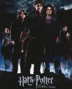

Joanne Rowling, CH, OBE, FRSL, FRCPE, who writes under the pen names J. K. Rowling and Robert Galbraith, is a British novelist and screenwriter who is best known for writing the Harry Potter fantasy series..
The Harry Potter books make up the popular series written by J. K. Rowling. The series spans seven books. The books have been made into movies by Warner Bros. Pictures with the last book split into two films. The books concern a wizard called Harry Potter and his journey through Hogwarts School of Witchcraft and Wizardry. The stories tell of him overcoming
Adaptation of the first of J.K. Rowling's popular children's novels about Harry Potter, a boy who learns on his eleventh birthday that he is the orphaned son of two powerful wizards and possesses unique magical powers of his own. He is summoned from his life as an unwanted child to become a student at Hogwarts, an English boarding school for wizards. There, he meets several friends who become his closest allies and help him discover the truth about his parents' mysterious deaths.
The follow-up to "Harry Potter and the Sorcerer's Stone" finds young wizard Harry Potter (Daniel Radcliffe) and his friends, Ron (Rupert Grint) and Hermione (Emma Watson), facing new challenges during their second year at Hogwarts School of Witchcraft and Wizardry as they try to discover a dark force that is terrorizing the school.
Harry Potter's (Daniel Radcliffe) third year at Hogwarts starts off badly when he learns deranged killer Sirius Black (Gary Oldman) has escaped from Azkaban prison and is bent on murdering the teenage wizard. While Hermione's (Emma Watson) cat torments Ron's (Rupert Grint) sickly rat, causing a rift among the trio, a swarm of nasty Dementors is sent to protect the school from Black. A mysterious new teacher helps Harry learn to defend himself, but what is his secret tie to Sirius Black?
The fourth movie in the Harry Potter franchise sees Harry (Daniel Radcliffe) returning for his fourth year at Hogwarts School of Witchcraft and Wizardry, along with his friends, Ron (Rupert Grint) and Hermione (Emma Watson). There is an upcoming tournament between the three major schools of magic, with one participant selected from each school by the Goblet of Fire. When Harry's name is drawn, even though he is not eligible and is a fourth player, he must compete in the dangerous contest.
Now in his fifth year at Hogwarts, Harry (Daniel Radcliffe) learns that many in the wizarding community do not know the truth of his encounter with Lord Voldemort. Cornelius Fudge, minister of Magic, appoints his toady, Dolores Umbridge, as Defense Against the Dark Arts teacher, for he fears that professor Dumbledore will take his job. But her teaching is deficient and her methods, cruel, so Harry prepares a group of students to defend the school against a rising tide of evil.
As Death Eaters wreak havoc in both Muggle and Wizard worlds, Hogwarts is no longer a safe haven for students. Though Harry (Daniel Radcliffe) suspects there are new dangers lurking within the castle walls, Dumbledore is more intent than ever on preparing the young wizard for the final battle with Voldemort. Meanwhile, teenage hormones run rampant through Hogwarts, presenting a different sort of danger. Love may be in the air, but tragedy looms, and Hogwarts may never be the same again.
Without the guidance and protection of their professors, Harry (Daniel Radcliffe), Ron (Rupert Grint) and Hermione (Emma Watson) begin a mission to destroy the Horcruxes, the sources of Voldemort's immortality. Though they must rely on one another more than ever, dark forces threaten to tear them apart. Voldemort's Death Eaters have seized control of the Ministry of Magic and Hogwarts, and they are searching for Harry -- even as he and his friends prepare for the ultimate showdown.
A clash between good and evil awaits as young Harry (Daniel Radcliffe), Ron (Rupert Grint) and Hermione (Emma Watson) prepare for a final battle against Lord Voldemort (Ralph Fiennes). Harry has grown into a steely lad on a mission to rid the world of evil. The friends must search for the Horcruxes that keep the dastardly wizard immortal. Harry and Voldemort meet at Hogwarts Castle for an epic showdown where the forces of darkness may finally meet their match.
The year is 1926, and Newt Scamander (Eddie Redmayne) has just completed a global excursion to find and document an extraordinary array of magical creatures. Arriving in New York for a brief stopover, he might have come and gone without incident, were it not for a No-Maj (American for Muggle) named Jacob, a misplaced magical case, and the escape of some of Newt's fantastic beasts, which could spell trouble for both the wizarding and No-Maj worlds.
The music of the Harry Potter film series was recorded and released in conjunction with the post-production and releases of each of the eight corresponding films. The scores were composed by John Williams, Patrick Doyle, Nicholas Hooper, and Alexandre Desplat. Musicians credited with writing source music include ..
Inside you'll find a collection of photos shot during the process of filming as well as picture of cast and crew members.
Harry Potter and the Cursed Child is a two-part stage play written by Jack Thorne based on an original new story by Thorne, J. K. Rowling and John Tiffany.
 A Very Potter Musical is a musical with music and lyrics by Darren Criss and A. J. Holmes and a book by Matt Lang, Nick Lang and Brian Holden. The story is a parody, based on several of the Harry Potter novels by J. K
A Very Potter Musical is a musical with music and lyrics by Darren Criss and A. J. Holmes and a book by Matt Lang, Nick Lang and Brian Holden. The story is a parody, based on several of the Harry Potter novels by J. K
It's about the Dark Lord's rise to power... An unofficial Harry Potter prequel that focuses on the origins of Voldemort has arrived online, seven months after it was given the green light by Warner Bros.